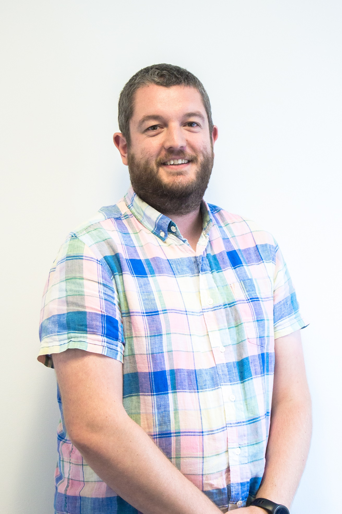

Paul Shannon
eLife Sciences Publications Ltd
Paul is an experienced technology leader and specialist in agile, lean and XP practices with highly developed communication skills. He is able to bring about change by explaining complex issues to a generalist audience in an engaging way. As a well-known advocate of quality driven software development, he has experience in evolving agile processes and practices to create high performing teams. He's also a regular, international conference speaker, author and community event organiser. He has more recently been known for recruiting diverse technology teams and pioneering apprenticeship programmes in the software industry.
Paul has led TDD workshops and lectures at universities and given talks at agile events around Europe, and can now be seen speaking internationally on open data, open science and open access publishing. He's also contributed to 3 books on Lean Software Development, testing and XP, and is the founder of Agile Staffordshire.
Website: http://blog.paulshannon.com